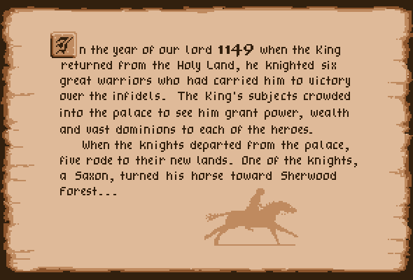
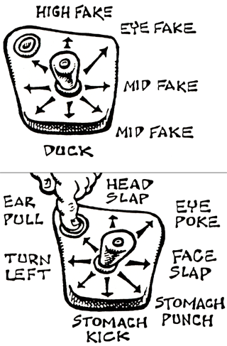

The scene: a quiet day in Stoogeville. Our itinerant trio is out for a stroll - they have plenty of time for such idle pursuits, being currently without gainful employment - when a disturbing sound reaches their ears.
"Hey, you two!" Moe calls out, bringing Larry and Curly to an instant stop. "Don't you knuckleheads hear that? Somebody's in trouble!"
"Yeah," agrees Larry, perking up his ears. "Somebody's cryin'!"
"It's comin' from the Orphanage!" chirps Curly.
"What kinda crumb would make an orphan cry?" wonders Moe, as the threesome gather up their indignation and march inside.
The Stooges soon trace the sounds of sobbing to its source: Ma, the sweet little old lady who runs the town orphanage.
"Gee, Moe," whispers Curly, "that's the oldest orphan I've ever seen! No wonder she's crying!"
"That's Ma, you pea brain!" responds Moe, who helps bring the point home with a slap to Curly's head. The sound of the slap is so loud, however, it interrupts Ma's crying jag and she lifts up her eyes to find the Stooges standing there.
"Why, hello, boys. So - sob - good to see you."
The Stooges move immediately to her side.
"What is it, Ma?" they all ask. "What's wrong?"
Ma rises slowly, arthritic bones creaking louder than her old rocking chair. "It's Mr. Fleecem, I'm afraid."
"Fleecem!" sputters Moe. "That flint-hearted old miser! What's he up to now?"
"It's his company, the Skin and Flint Finance Corporation. They hold the mortgage on this orphanage and unless I pay him everything I owe him within 30 days, he says he'll tear it down!"
The Stooges huddle. The Stooges are decisive!
"Don't worry, Ma!" they tell her. "We'll get the money for you!"
"You... will? Oh, how wonderful! Mary! Leona! Cynthia! Did you hear that? The boys are going to save our orphanage." Suddenly, Mary, Leona and Cynthia, Ma's beautiful daughters, appear and rush to the side of Moe, Larry and Curly.
"Oh, we'd be ever so grateful," they trill. "We'd be free to marry if the orphanage were safe and the repairs on it were made... and there was some money left over..."
The eyes of our heroes light up like roman candles at the prospect of betrothal to these lovely lasses, and, with a hearty "Woo woo woo!", they head out to accomplish the first of their tasks: raising enough money to pay off the note on the orphanage. They must then repair the orphanage and have enough left over to marry the three daughters!
Can the Stooges help the poor widow save the orphanage from Fleecem, the evil banker? Moe, Larry, and Curly have only 30 days to earn enough money to stop Fleecem from foreclosing. To pay off the mortgage, they'll need $5,000. With $10,000 they can pay off the mortgage and repair the orphanage. But they'll need more than that to marry Ma's beaultiful daughters!
Moe has a map of Stoogeville, but can't make up his mind where to go next. Press the fire button to stop the hand and go to that place, or wait until the timer runs out and go wherever Moe's hand stops. (You will have about 2 seconds to look at the map before the hand starts moving and the timer starts counting down, so pay attention!) There are 180 places to go in Stoogeville, all on a ONE WAY street.
The first 30 "squares" are in the image below. The street never changes, so after you play several times, you'll really know your way around town! Below is a list of the different things that you will find along the road.

It's important to control the speed of Moe's hand. To slow it down you'll have to "knock" some sense into Larry and Curly. You control Moe, in the middle. Whenever you hit Larry or Curly the speed of the finger goes down. But if you miss them or they hit you, the speed increases. (The bar above their heads shows how much the speed has changed and the time remaining.) FAKING IS CRITICAL TO MOE'S SUCCESS!

When Moe's hand stops on one of these, the trap will snap on his finger. The Stooges don't go anywhere when this happens, and they lose a day. If Moe gets snapped on his last finger, the Stooges will no longer be able to work and their trip through Stoogeville will be over. (Watch the hand, it indicates the number of fingers remaining.)
You control all three Stooges. Move the virtual joystick up, down, or center it to make Moe, Larry, or Curly duck. To throw a pie, simply push the joystick while any of the Stooges are "ducking". Watch the lights in the upper right corner to tell how many times you've been hit - five "hits" and the Stooges are out of a job! If you throw ALL your pies, you double your money as a bonus! (NOTE: You only make money when you HIT a guest, not when you miss.)
Move the joystick UP to accelerate, DOWN to brake, and LEFT or RIGHT to avoid the people in the hall. Make money for making it to the operating room with time left on the clock. Collect the items thrown from the nurses cart to make bonus money along the way! Moe makes $5 per item, Curly gets $10 and Larry scores $15!
Move the spoon over the cracker and push the fire button to scoop it up. You make $10 for each cracker and $50 per bowl.
Move the virtual joystick right to accelerate, left to slow down, and up or down to change lanes. Press the fire button to jump over things. Get back before the end of the last round for a bonus!
Move and hold the virtual joystick LEFT for "A", UP for "B" and RIGHT for "C", then press the fire button.
Free money, or a reward for finding it.
If you're lucky, you'll just lose a day...